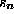
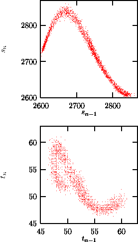
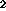

Highly sampled data representing the continuous time of a differential
equation are called flow data. They are characterized by the fact that
errors in the direction tangent to the trajectory do neither shrink nor
increase exponentially (so called marginally stable direction) and thus
possess one Lyapunov exponent which is zero, since any perturbation in this
direction can be compensated by a simple shift of the time. Since in many data
analysis tasks this direction is of low interest, one might wish to eliminate
it. The theoretical concept to do so is called the Poincaré section. After
having chosen an (m-1)-dimensional hyperplane in the m-dimensional
(embedding) space, one creates a compressed time series of only the
intersections of the time continuous trajectory with this hyperplane in a
predefined orientation. These data are then vector valued discrete time
map like data. One can consider the projection of these
(m-1)-dimensional vectors onto the real numbers as another measurement
function (e.g. by recording the value of  when  passes the
Poincaré surface), so that one can create a new scalar time series if
desirable. The program poincare constructs a sequence of vectors from a
scalar flow-like data set, if one specifies the hyperplane, the orientation,
and the embedding parameters. The intersections of the discretely sampled
trajectory with the Poincaré plane are computed by a third order
interpolation.
passes the
Poincaré surface), so that one can create a new scalar time series if
desirable. The program poincare constructs a sequence of vectors from a
scalar flow-like data set, if one specifies the hyperplane, the orientation,
and the embedding parameters. The intersections of the discretely sampled
trajectory with the Poincaré plane are computed by a third order
interpolation.

Figure: Poincaré surface of section using extrema: A two-dimensional delay plot of the sequence of maxima (top) and of the time intervals between successive maxima (bottom). without employing the option -t time, where time is the number of time steps after the last extremum during which no further extrema are searched for (here: 3), one finds some fake extrema due to noise showing up close to the diagonal of the delay representation. Data: Time series of the output power of a CO laser [35].
The placement of the Poincaré surface is of high relevance for the usefulness of the result. An optimal surface maximizes the number of intersections, i.e.\ minimizes the time intervals between them, if at the same time the attractor remains connected. One avoids the trials and errors related to that if one defines a surface by the zero crossing of the temporal derivative of the signal, which is synonymous with collecting all maxima or all minima, respectively. This is done by extrema. However, this method suffers more from noise, since for small time derivatives (i.e. close to the extrema) additional extrema can be produced by perturbations. Another aspect for the choice of the surface of section is that one should try to maximize the variance of the data inside the section, since their absolute noise level is independent of the section. One last remark: Time intervals between intersections are phase space observables as well [36] and the embedding theorems are thus valid. For time series with pronounced spikes, one often likes to study the sequence of interspike time intervals, e.g. in cardiology the RR-intervals. If these time intervals are constructed in a way to yield time intervals of a Poincaré map, they are suited to reflect the deterministic structure (if any). For complications see [36].
For a periodically driven non-autonomous system the best surface of section is usually given by a fixed phase of the driving term, which is also called a stroboscopic view. Here again the selection of the phase should be guided by the variance of the signal inside the section.